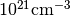
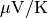
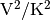
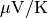
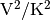

transport module¶
-
class
transport.Transport(bs)¶ Bases:
objectInvolves all transport related routines.
Parameters: bs : object
A Band() object.
lattice : object
A Lattice() object.
param : object
A Param() object.
-
acceptor_ionization(number, energy, degen, e_fermi, beta)¶ Returns the number of ionized acceptors.
Parameters: number : float
Number of acceptors.
energy : float
The energy in eV where the acceptor compensation is to be evaluated.
degen : float
The acceptor degeneration number.
e_fermi : float
The Fermi level in eV.
beta : float
The beta (1/kT) factor in eV.
Returns: float
The acceptor ionization compensation.
-
calc_carrier_concentration(temperature, chempot, dos=None, dos_energies=None, band_decomp=False, defect_ionization=False)¶ Returns the charge carrier concentration.
Parameters: temperature : float
The temperature in K.
chempot : float
The chemical potential in eV.
dos : ndarray, optional
Dimension: (N,M)Contains the band decomposed density of states for each band N and energy M. If not supplied, set to the dos_partial parameter of the current Bandstructure() object.
dos_energies : ndarray, optional
Dimension: (M)The energies in eV where the density of states are sampled.
band_decomp : boolean
Return a band decomposed carrier concentration or not.
defect_ionization : boolean
Selects if defect ionization compensation should be included. The donor_number, donor_energy, donor_degen_fact, acceptor_number, acceptor_energy and acceptor_degen_fact need to be set in the general configuration file.
Returns: n_type : ndarray
Dimension: (N)Contains the n-type carrier concentration for each band index N in units of .
p_type : ndarray
Dimension: (N)Contains the p-type carrier concentration for each band index N in units of .
-
calc_transport_tensors(bs=None, temperatures=None, chempots=None, method=None, transport=False)¶ Selects which method to use when calculating the transport coefficients
Parameters: bs : A Band() object containing the band structure.
temperatures : ndarray, optional
Dimension: (N)Contains N different temperatures in K. If not supplied the temperature from the active Transport() object is used.
chempots : ndarray, optional
Dimension: (M)Contains M different chemical potentials in eV. If not supplied the chempot from the active Transport() object is used.
method : {“closed”, “numeric”, “numerick”}
If method is not supplied is defaults to “numeric” unless bandstructure data is read numerically when it defaults to “numerick”.
“closed” evaluates the closed Fermi integrals where onlyone scattering mechanism is possible per band. Only validfor systems where one can strictly rely on a parametrizedspherical bandstructure based on effective mass models.Parameters (e.g. effective masses for each band) are setin the bandstructure configuration file.The driver routine islbtecoeff.spherical_closed()“numeric” similar to “closed, but evaluates the Fermiintegrals in an open form (e.g. it is possible toconcatenate the scattering mechanisms, which is notpossible for the closed Fermi integrals).The driver routine islbtecoeff.spherical_numeric()“numerick” evaluates the transport integrals more generallyas an integral over the k-points. It is less restrictivethan the two other options, but also more prone toconvergence issues etc. However, for bandstructuresread from datafiles, this is the only option.The driver routine islbtecoeff.numerick()Returns: sigma, seebeck, lorenz : ndarray, ndarray, ndarray
Dimension: (N,M,3,3), (N,M,3,3), (N,M,3,3)Returns the electrical condcutivity, Seebeck coefficient and Lorenz tensor for N temperature and M chemical potential steps in units of
 ,
,
. These are stored in the
current Transport() object.
,
,
. These are stored in the
current Transport() object.
-
donor_ionization(number, energy, degen, e_fermi, beta)¶ Returns the number of ionized donors.
Parameters: number : float
Number of donors.
energy : float
The energy in eV where the donor compensation is to be evaluated.
degen : float
The donor degeneration number.
e_fermi : float
The Fermi level in eV.
beta : float The beta (1/kT) factor in eV.
Returns: float
The donor ionization compensation.
-
fermi_dist(e, e_fermi, beta)¶ Returns the Fermi Dirac distribution function (without spin degeneracy).
Parameters: e : float
The energy in eV where the Fermi Dirac distribution is to be evaluated.
e_fermi : float
The Fermi level in eV.
beta : float
The beta factor (1/kT) in eV.
Returns: float
The value of the Fermi function (without spin degeneracy).
-
fetch_chempot_from_etas(temperature, etas)¶ This routines simply takes the temperature and an array of etas (unitless chemical potentials) and calculates the associated values of the chemical potential
Parameters: temperature : float
The temperature in K.
etas : ndarray
Dimension: NThe unitless chemical potential,
 for N
steps.
for N
steps.Returns: chempots : ndarray
Dimension: NThe chemical potentials in units of eV.
-
fetch_chempots(store=True)¶ Set up the chemical potential.
Parameters: store : boolean, optional
If given and set to True, the chempot array is in addition to being returned also stored in the current Transport() object.
Returns: chempot : ndarray
Dimension: (N)Contains N chemical potential linear samplings in units of eV. The parameters transport_chempot_min, transport_chempot_max and transport_chempot_samples in param.yml set the maximum and minimum chemical potential and its number of samples.
-
fetch_etas(chempot, temperature)¶ Calculate the reduced chemical potential
Parameters: chempot : ndarray
Dimension: (N)Contains N samples of the chemical potential in units of eV.
temperature : float
The temperature in K.
Returns: eta : ndarray
Dimension: (N)Contains N samples of the reduced chemical potential
-
fetch_relevant_bands(tr=None)¶ Locate bands that will be included in the transport integrals.
Parameters: tr : object, optional
A Transport() object.
Returns: None
Notes
The included bands are located by considering the input range of chemical potentials from transport_chempot_min and transport_chempot_max padded with the value transport_energycutband on each side (see the general configuration file).
-
fetch_temperatures(store=True)¶ Set up the temperatures.
Parameters: store : boolean, optional
If given and set to True, the temperature array is in addition to being returned also stored in the active Transport() object.
Returns: temperature : (N) ndarray
Contains N temperature linear samplings in units of K. The parameters temperature_min, temperature_max and temperature_steps in param.yml set the maximum and minimum temperature and its number of steps.
-
setup_scattering(dos=None, dos_energies=None, select_scattering=None, numerick=False)¶ Selects which how to set up the carrier scattering.
Parameters: dos : ndarray
Dimension: (N,M)Array containing the partial density of states in units of 1/eV/AA^3, where N is the band index and M is the energy index.
dos_energies : ndarray
Dimension: (M)Array containing the energy in eV at M samplings where the density of states is calculated.
select_scattering : ndarray
Dimension: (12)Array containing integers. Set to 1 to select the scattering, 0 to exclude. The variables in select_scattering are set in the bandstructure configuration file, one value for each scattering and band. See notes below for the currrently available scattering mechnisms.
Returns: None
-